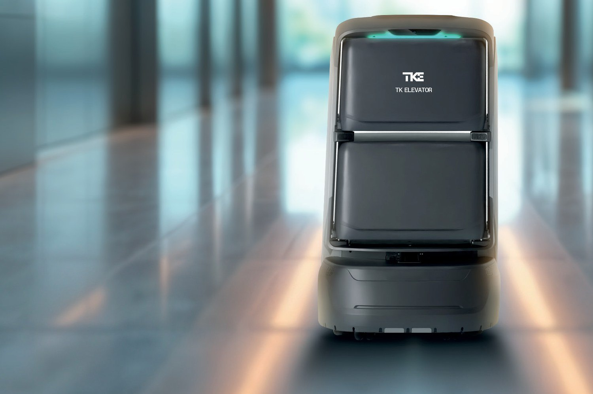
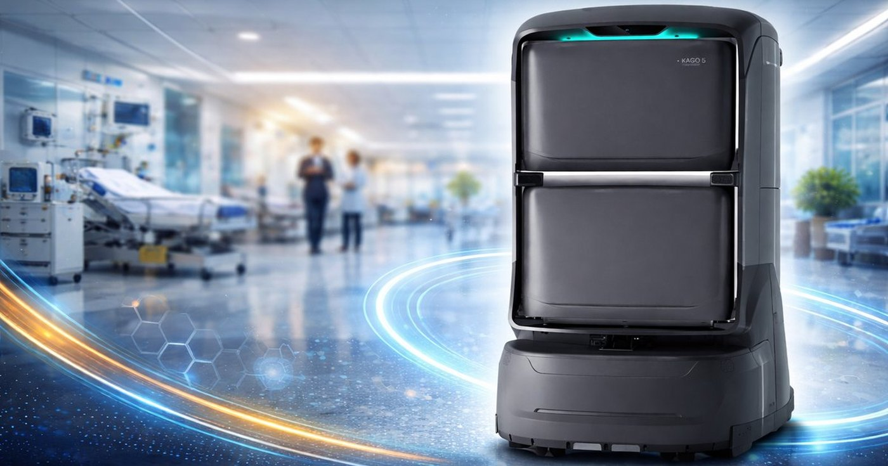

Não é conceito — é o robô em operação. Toque no play para assistir.
Em um hospital, medicamentos, exames, amostras, refeições e rouparia percorrem os andares o tempo todo — e é a equipe assistencial que faz esse transporte. Cada trajeto é um enfermeiro, um técnico ou um maqueiro fora do leito. Multiplique por dia, por andar, por plantão: é uma folha de pagamento andando pelos corredores.
O TOMI assume esse trajeto. Ele leva o item do ponto A ao ponto B de forma autônoma — chama o elevador sozinho, sobe, desce e entrega — devolvendo horas de equipe qualificada para o que só ela pode fazer: cuidar do paciente.
E faz isso com rastreabilidade: cada entrega vai em compartimento fechado, com retirada por senha (PIN). Ideal para itens controlados.

Robôs de entrega comuns param na porta do elevador. O software do TOMI é integrado aos elevadores TK Elevator: ele chama a cabine, entra, seleciona o andar e desembarca — deslocamento totalmente autônomo entre pavimentos, sem ninguém apertar botão.
Na sua proposta, a integração elevador–TOMI já está contemplada. Os elevadores Evolution 300 do Hospital D. Luiz I saem prontos para o robô — resta apenas adquirir o TOMI, sob consulta, quando desejar. É a vantagem de contratar robô e elevador do mesmo fabricante.
LIDAR + câmeras de profundidade mapeiam o ambiente e desviam de obstáculos em tempo real.
Várias bandejas de servir — múltiplas entregas numa só viagem.
Item fechado e retirada por PIN — trilha segura para medicamentos.
Até 8 h por carga e 2000 ciclos. Volta sozinho à base para recarregar.
Agendamento de tarefas e controle por tela intuitiva ou aplicativo Android.
Reduz vibração e mantém a carga estável em qualquer piso.
Grande capacidade de carga com várias bandejas, suportando até 40 kg — várias entregas em uma só viagem.
LIDAR, câmeras de profundidade e sensor de penhasco para detecção em tempo real — protegendo pacientes, macas e o próprio robô.
Baterias de fosfato de ferro-lítio (LiFePO4) com ampla faixa térmica, seguras contra superaquecimento e explosão.
Rota ponto a ponto orientada por IA, percepção de ambiente 3D e mapa semântico com parede virtual e zonas restritas.
2000 ciclos e até 8 horas de operação por carga. Volta sozinho à base para recarregar.
Agendamento de tarefas e controle por tela touch ou app Android. Suspensão que mantém a carga estável.
As mesmas capacidades, aplicadas à rotina de um hospital de referência:
Medicamentos e insumos entregues no andar certo, com compartimento fechado e retirada por senha — trilha para itens controlados.
Amostras e exames transportados sem depender de maqueiro, reduzindo o tempo entre a coleta e o resultado.
Refeições e dietas circulando entre pavimentos no horário, liberando a equipe para o cuidado direto.
Enxoval e materiais de rotina fazem o percurso sozinhos — menos circulação de pessoas, favorecendo o controle de infecção.
Selecione o destino na tela e defina a senha.
Coloque o item no compartimento e aguarde.
O TOMI fecha e chama o elevador sozinho.
Ao chegar, avisa o destinatário.
Senha digitada, item retirado com segurança.
Retorna sozinho à base de carga.
Posso preparar uma visita técnica e a cotação sob medida para o fluxo do hospital. É só me chamar.